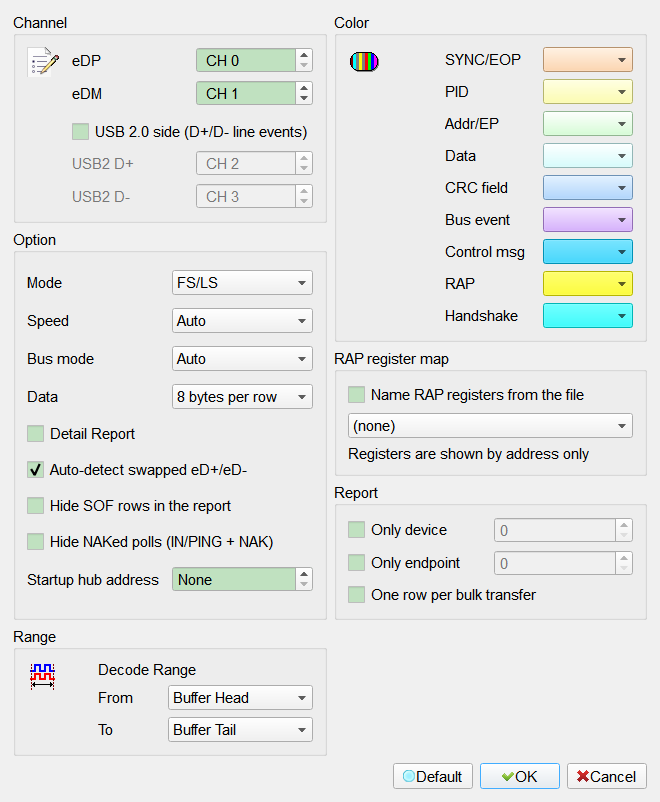
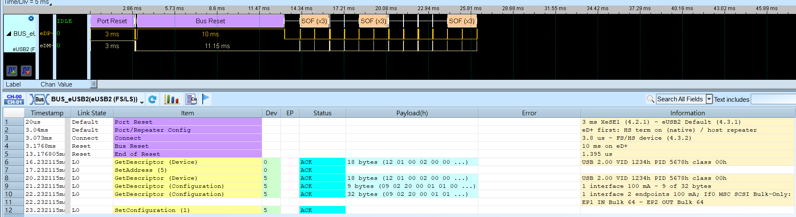
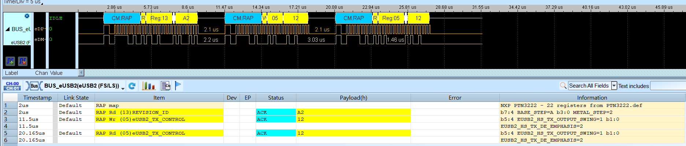
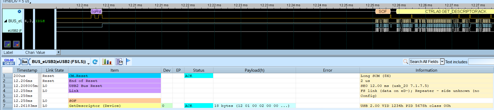
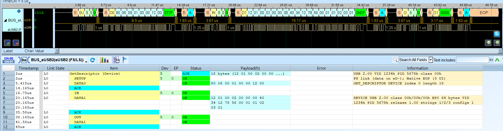
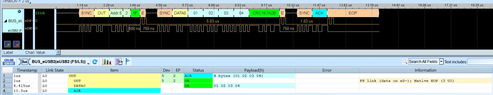
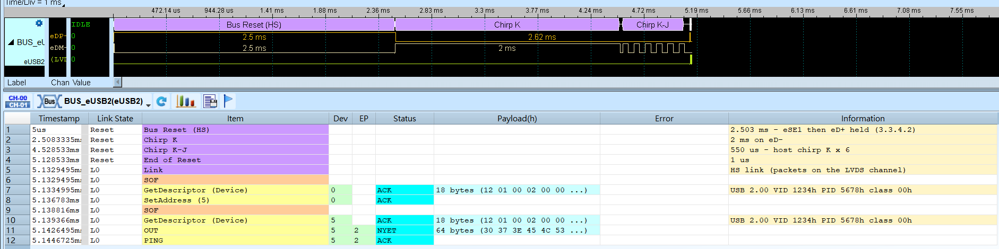

eUSB2 (Embedded USB2)
eUSB2 (Embedded USB2 Physical Layer Supplement, Rev 1.2) carries USB 2.0 traffic between chips on two single-ended lines, eD+ and eD-, at 1.0 V or 1.2 V. A full-speed (FS) link, 12 Mb/s, sends its data on eD-; a low-speed (LS) link, 1.5 Mb/s, on eD+. The idle bus is eSE0 (both lines low), and eSE1 (both lines high) starts the eUSB2 signaling: Port Reset, control messages and register access. The decode reads eD+ and eD- on two logic analyzer channels and decodes FS and LS links; with Mode HS it also reads the pair through the LVDS POD on a third channel and decodes HS links, 480 Mb/s (see HS). It decodes them in native mode (an eUSB2 port to an eUSB2 device) and in repeater mode (an eUSB2 port to an eUSB2-to-USB2 repeater). It reports the eUSB2 link signaling, control messages (CM), register access (RAP) and the USB 2.0 packets, grouped into transactions and control transfers with standard, hub and class requests named. Optionally it also reports the line events on the USB 2.0 side of a repeater or hub port.
| Connection | Description |
|---|---|
| eD+ / eD- | The two eUSB2 lines, single-ended, on the channels set as eDP / eDM in the Settings (default CH 0 / CH 1). |
| Threshold | Half the eUSB2 supply: 0.5 V for 1.0 V, 0.6 V for 1.2 V. The receiver levels are VIL ≤ 0.35 × VCC and VIH ≥ 0.65 × VCC (eUSB2 Table 7-12, Table 7-13). |
| LVDS pair | Only with Mode HS: the LVDS POD on eD+ / eD- (P on eD+, N on eD-), on the channel set as eDP/eDM (LVDS) (default CH 2). |
| USB2 D+ / USB2 D- | Only with USB 2.0 side ticked: D+ and D- of the repeater's or hub port's USB 2.0 side. |
Decode Settings

| Setting | Description | Default |
|---|---|---|
| eDP/eDM (LVDS) | Shown with Mode HS: the channel of the LVDS POD on the eD+ / eD- pair. | CH 2 |
| USB 2.0 side (D+/D- line events) | Tick to add two channels, USB2 D+ and USB2 D-, for the USB 2.0 side of an eUSB2-to-USB2 repeater or hub port. Its line events are reported between the eUSB2 rows (see USB 2.0 side); its packets are not decoded again, since they are the packets of the eUSB2 side. | Off (CH 2 / CH 3) |
| Mode | FS/LS: eD+ and eD- only. HS (LVDS POD): adds the eDP/eDM (LVDS) channel, from which the HS packets are read; eD+ and eD- still give the link signaling and the line events (see HS). | FS/LS |
| Speed | Auto reads the speed from the first SYNC: the line it is on (FS on eD-, LS on eD+) and the length of one bit. FS (12 Mb/s) or LS (1.5 Mb/s) fixes it; the Information column then says speed set in Settings. |
Auto |
| Bus mode | Auto, Native or Repeater. The packets are decoded the same way in all three. The setting names the meaning of the Port/Repeater Configuration row, where the line driven first means termination on or off on a native link, and host or peripheral repeater on a repeater link: Native and Repeater give that meaning, Auto gives both. | Auto |
| Data | Bytes per row in Detail Report: 8 or 16. | 8 bytes per row |
| Detail Report | Off: one row per transaction, control transfer, control message or register access. On: each row is followed by its packets, indented. When another device's transaction comes between the packets of a control transfer, the packets stay in time order: the other transaction's row and packets, then a <request> (continued) row above the rest of the transfer. |
Off |
| Auto-detect swapped eD+/eD- | When the SYNC is on the line the speed does not use (FS SYNC on eD+, LS SYNC on eD-), the lines are treated as swapped and decoded the other way round; the Information column says eD+/eD- swap corrected. Off: a Wiring row says the lines look swapped, and those packets are not decoded. |
On |
| Hide SOF rows in the report | Leaves out the rows that hold only SOF packets (FS) or LS keep-alives. | Off |
| Hide NAKed polls (IN/PING + NAK) | Leaves out IN and PING tokens answered by NAK. | Off |
| Startup hub address | A device address known to be a hub, for a capture that starts after enumeration. Its interrupt IN data is then read as the hub's status change bitmap. | None |
| Name RAP registers from the file | Tick and pick a register map file from the list to report RAP registers by name, with their bit fields (see RAP register map). The list holds the .def files in the AqeUSB2 folder of the TL work folder; the choice is kept on this PC. Off, or (none): registers are shown by address. |
Off, (none) |
| Only device | Tick and enter an address (0–127) to report only that device. Address 0 also shows, where every device is enumerated before SetAddress. Rows that belong to no device (line events, control messages, register access, SOF) still show. | Off, 0 |
| Only endpoint | Tick and enter an endpoint (0–15) to report only that endpoint. 0 is the control endpoint. | Off, 0 |
| One row per bulk transfer | Bulk transactions of full packet size on one endpoint, up to the shorter (or zero-length) packet that ends the transfer, become one row. The Payload column gives the total length, the Information column the number of transactions. Not applied with Detail Report. | Off |
Result
The report has one row per item: a transaction, a control transfer, an eUSB2 line event, a control message, a register access, or a group of SOF packets and polls (an idle row).
| Column | Content |
|---|---|
| Link State | State of the eUSB2 link after the row: Default, Connect, Reset, L0 (active), L1 (LPM or CM.L1 sleep), L2 (suspend). Empty until the capture shows the state. |
| Item | What the row is: the line event, the control message (CM.Reset), the register access (RAP Rd 13h), the request name for a control transfer (for example GetDescriptor (Device)), IN / OUT with the endpoint's transfer type when the device's Configuration descriptor has been seen (Bulk IN, Interrupt IN), or an idle row with its counts, for example SOF (x8) NAK (x3) No answer (x8). |
| Dev | Device address. |
| EP | Endpoint number. |
| Status | ACK, NAK, STALL, NYET, No handshake, Error. Control messages and register access: ACK or No ACK from the receiver, Error on a parity error. On packet rows (Detail Report): the CRC check, OK or Error. |
| Payload | Data length and the first bytes; for a register access, the register value. |
| Error | Bus and protocol errors in red: PID check, CRC, bit stuffing, EOP, no response, CM parity, RAP turnaround over 64 clocks. A device or repeater that contradicts the specification is a warning, in yellow, for example Reset < 10 ms, RAP outside Default. |
| Information | The measured duration of line events with the eUSB2 clause; decoded descriptors and requests; Mass Storage CBW / CSW with the SCSI command, HID boot keyboard and mouse reports, CDC line coding; register fields with a register map. |
A native eUSB2 link from Port Reset, and the enumeration of an FS mass storage device, with Hide SOF rows ticked: Port Reset, Port Configuration, Connect, Bus Reset and End of Reset, then the requests.

Register access to a host repeater (NXP PTN3222) in Default, with Bus mode Repeater and Name RAP registers from the file on PTN3222.def: a read, a write and the read back. The register names and fields come from the file.

A host repeater and its USB 2.0 side on four channels, with USB 2.0 side ticked and Bus mode Repeater, the FS device already attached: the host sends CM.Reset, the repeater drives a 12 ms bus reset on the USB 2.0 side, then the first SOF and request follow on both sides. The report lists the whole capture; the waveform is zoomed to the part after the bus reset (about 12.19 to 12.28 ms, Time/Div 5 µs): End of Reset (EoRs, the short form of its block), the SOF and the start of GetDescriptor (Device).

One control transfer, GetDescriptor (Device), with Detail Report ticked: the transfer row, then its packets: SETUP, DATA0 and ACK, the data stage (IN, DATA1 with the 18 bytes, ACK) and the status stage (OUT, DATA1 with no data, ACK). The token and data packet rows give their CRC check in the Status column. Where a block in the waveform is too narrow for its name, it shows a short form: S for SYNC, SU for SETUP, D0 / D1 for DATA0 / DATA1, O for OUT, A for ACK, E for EOP.

One OUT transaction with Detail Report ticked: the OUT token, DATA0 with 4 bytes, and the ACK. Each field has a block of its own in the waveform: SYNC, PID, address, endpoint, CRC5, data bytes, CRC16 and EOP.

eUSB2 line events and control messages
| Item | What it is |
|---|---|
| Link | The speed and the line that carries the data (FS link (data on eD-)), with eD+/eD- swap corrected or speed set in Settings where they apply, and the bus mode the EOP shape shows: Native mode, or the repeater side. |
| Wiring | With Auto-detect swapped eD+/eD- off: a SYNC on the line the speed does not use; those packets are not decoded. |
| Port Reset | XeSE1: both lines high for milliseconds. The link goes to Default. |
| Port/Repeater Config | One line driven, the other answers. Information: the line driven first and its meaning (see Bus mode). |
| Connect | The device's attach: eD+ for an FS device, eD- for an LS device. On the host side of a repeater, where the connect is held until the host answers, Information adds no answer: repeater host side. |
| Bus Reset / End of Reset | The USB bus reset on eD+ (FS) or eD- (LS), and the strobe that ends it, with their duration. |
| Bus Reset (HS), Chirp K, Chirp K-J | The bus reset of an HS link (eSE1, then eD+ held), the device's chirp K, and the host's chirp K-J with its count (host chirp K x 6); End of Reset follows. |
| K State, SOResume/SOWake, End of Resume | Resume or remote wake, and its end. |
| Disconnect | The device left. |
| LS Keep-Alive | An LS EOP on its own. |
| Held at Start | A line that is high from the start of the capture; what it was is not known. |
| CM.FS/L1, CM.L2, CM.Reset, CM.Test, CM.RAP, CM.14 (re-driver RAP) | Control messages (eUSB2 Table 3-4). Information: Long SCM (8X) for the long start, Bits on rising eD+ when the bits were read on the rising clock edge. |
Register access (RAP)
A register access is one row: RAP Rd, RAP Wr, RAP Set or RAP Clr with the register address, the value in the Payload column and the receiver's answer in the Status column. Register access belongs in Default, before the Port or Repeater Configuration (eUSB2 5.2.2); a register access in another state the capture has shown is a warning, RAP outside Default. A turnaround under 3 clocks is a warning, over 64 clocks an error.
RAP register map
eUSB2 defines how registers are reached, not what they are: each repeater and device has its own registers. A register map file names them. With Name RAP registers from the file ticked:
- The first row,
RAP map, says which file is used and how many registers it names (NXP PTN3222 - 22 registers from PTN3222.def), and lists every line of the file that could not be used, by line number. When the file cannot be read, it says so, andRegisters are shown by address only. - A register access names the register,
RAP Rd (13)REVISION_ID, and the Information column splits the value into the register's fields,b7:4 BASE_STEP=A b3:0 METAL_STEP=2. A Set or Clear names the bits it touches. - The file is read again at every decode, so a change to it shows at the next decode.
Put the .def files in the AqeUSB2 folder of the TL work folder. The file is plain text; # starts a comment; numbers are hex, written 0x13 or 13h; bit numbers are decimal 0–7:
[Device]
Name = NXP PTN3222
[Register]
# <address> = <name>[, <access>] address 0x00 to 0x3F
0x13 = REVISION_ID, RO
0x05 = eUSB2_TX_CONTROL, RW
[Field]
# <register>.<msb>[:<lsb>] = <name> the register by address or by name
0x13.7:4 = BASE_STEP
0x13.3:0 = METAL_STEP
[Register.Read] and [Register.Write] take the place of [Register] for a device that reads and writes a register at two different addresses. A line that cannot be used is skipped; the other lines still apply.
No response
No response is an error: a token that the device did not answer. Two cases are reported differently:
| Case | How it shows |
|---|---|
| A SETUP that the device did not acknowledge (the host sends it again) | A row of its own: Status Error, Error No response, Information SETUP w/o ACK - the host resends it. The host's next SETUP is the control transfer. |
| The probe is on a hub's downstream segment (the capture shows a SPLIT or a hub port request to a hub that has not answered), and the device has not answered anything so far | Not an error: the hub repeats the host's tokens for its other ports on this segment, but not their answers. Status No handshake, Information No response - dev n not heard from yet. Its unanswered IN / PING polls join the idle row as No answer (xN), with one Information line per device and endpoint. |
A hub port that reports a connected device and gets no SetPortFeature(PORT_RESET) within 1 s is reported as a No Port Reset row, with the port status the hub returned.
USB 2.0 side
With USB 2.0 side ticked, the line events of the USB 2.0 side are rows of their own, named USB2 ...:
| Item | When | Information |
|---|---|---|
| USB2 Attach | D+ or D- pulled up for 2.5 µs or more after SE0 | The line pulled up: pull-up on D+ (FS) or pull-up on D- (LS) |
| USB2 Detach | SE0 for 200 ms on an attached port | SE0 200 ms - no pull-up |
| USB2 Bus Reset | SE0 of 2.5 µs to 200 ms on an attached port, then J | The length, for example SE0 12.00 ms; under 10 ms also the warning Reset < 10 ms |
| USB2 Suspend | J for 3 ms without a change on an attached port | J idle 3 ms - dev suspends |
| USB2 Resume K | K for 1 ms or more | The length, Resume / Remote Wake |
| USB2 SE1 | D+ and D- both high for 1 µs or more | D+ and D- both high |
A No Port Reset row then adds what the USB 2.0 side did meanwhile: USB2 side: no bus reset or USB2 side: a bus reset. A USB 2.0 row is listed after an eUSB2 row that is still open when the event happens; it then takes that row's end time.
HS
| Item | Content |
|---|---|
| Instruments | LA4000 or BusFinder with the LVDS POD. |
| Channels | eD+ and eD- single-ended, plus the LVDS POD on the pair: P on eD+, N on eD-. eD+ and eD- give the link signaling and the line events, the HS bus reset and chirps included; the HS packets are read from the LVDS channel. |
| Sample rate | 2 GS/s. Below 3 samples per HS bit (1.44 GS/s) the report starts with an HS mode row, Information <n> samples per HS UI - need >= 3; the capture is still decoded. |
| Link | The first HS row: Link, Information HS link (packets on the LVDS channel). |
| Live mode | HS packets are not decoded live: the report starts with an HS mode row, Information HS packets are not decoded live, and only eD+ and eD- are decoded. |
A Bus Reset from HS with the chirp handshake, then GetDescriptor (Device), SetAddress (5), GetDescriptor (Device), a bulk OUT answered NYET and the PING after it, all at HS, with Mode HS. The waveform area shows the reset on eD+ and eD-: Bus Reset (HS), Chirp K and Chirp K-J.
